Dataset Distillation#
Report#
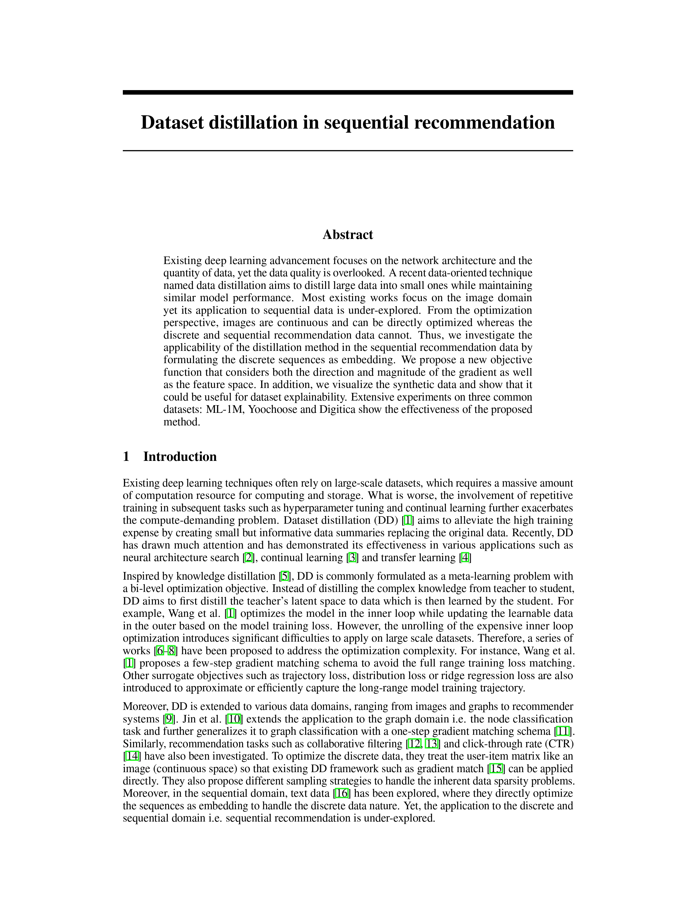 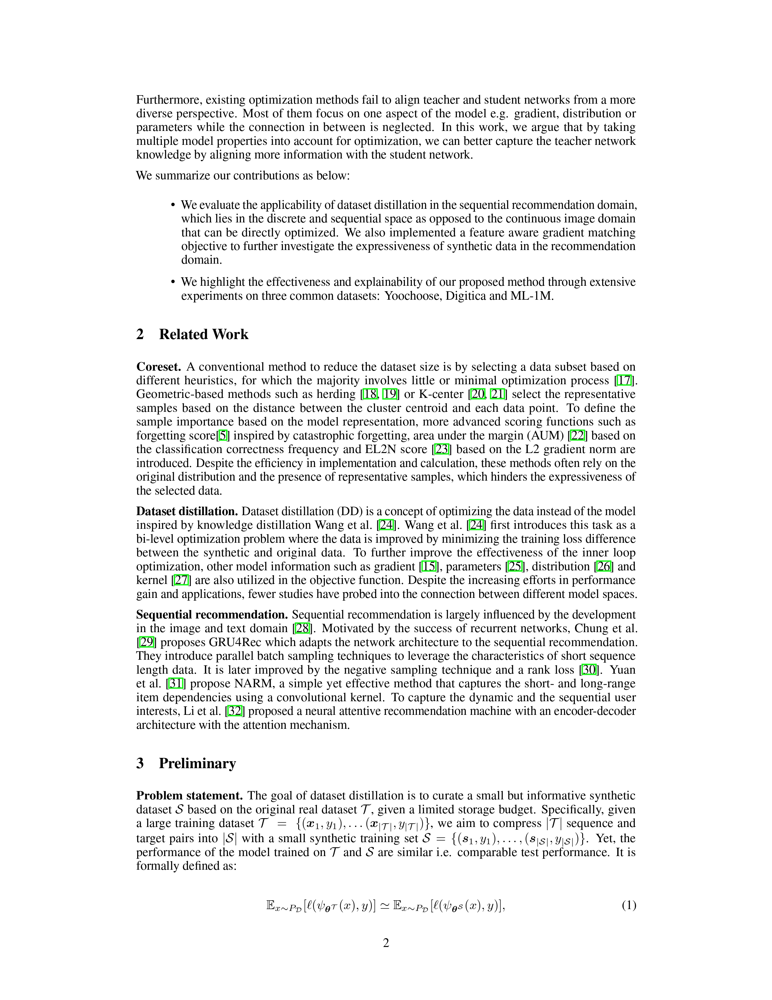 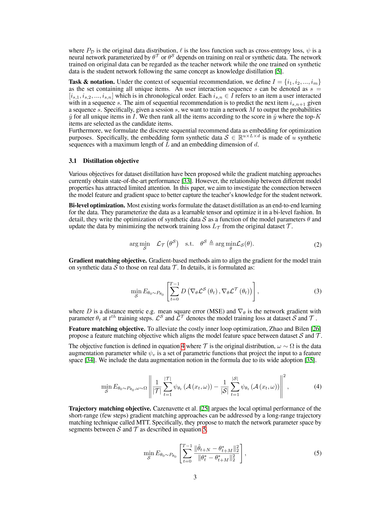 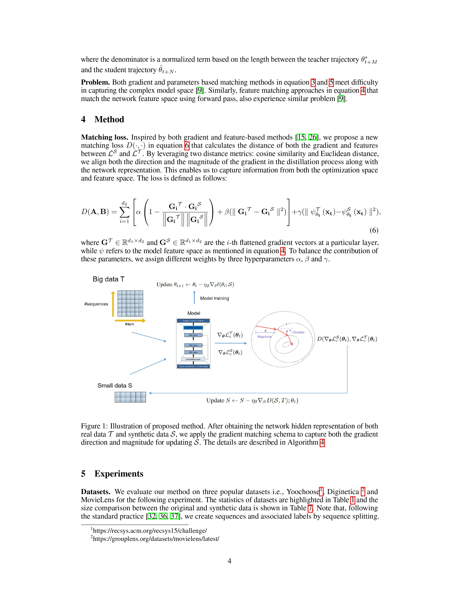 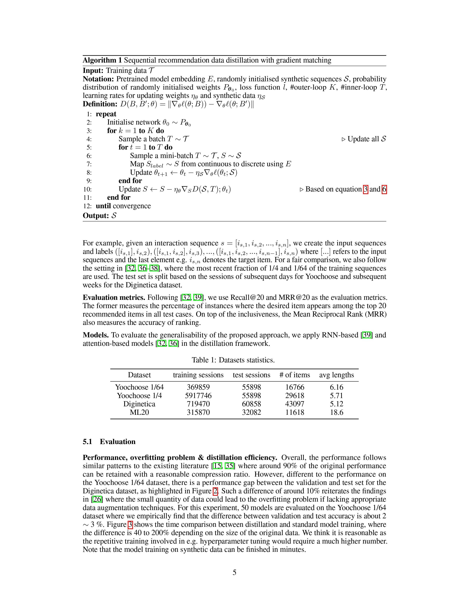 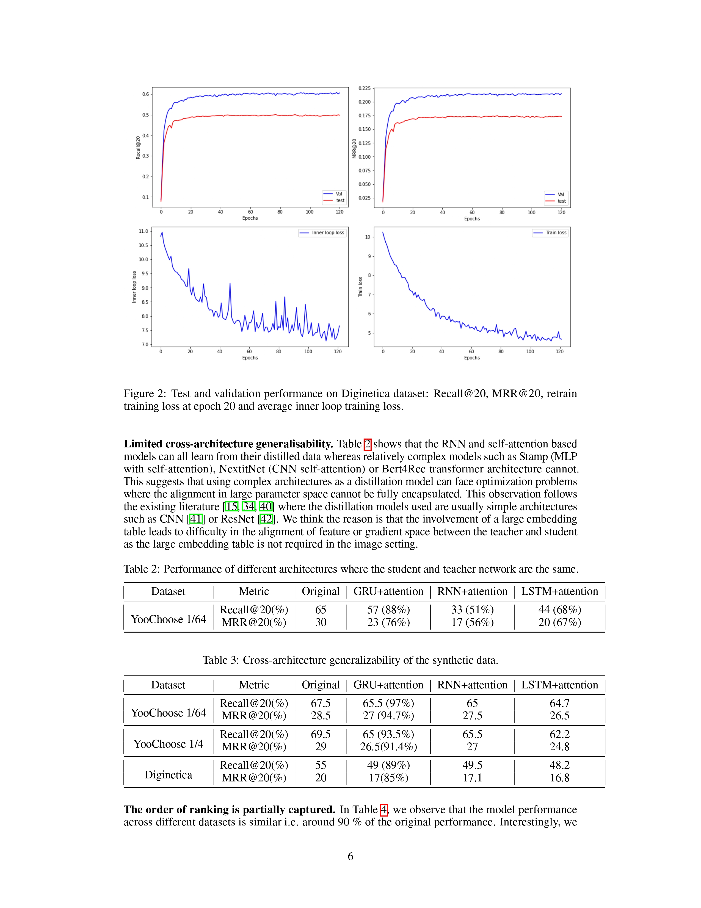 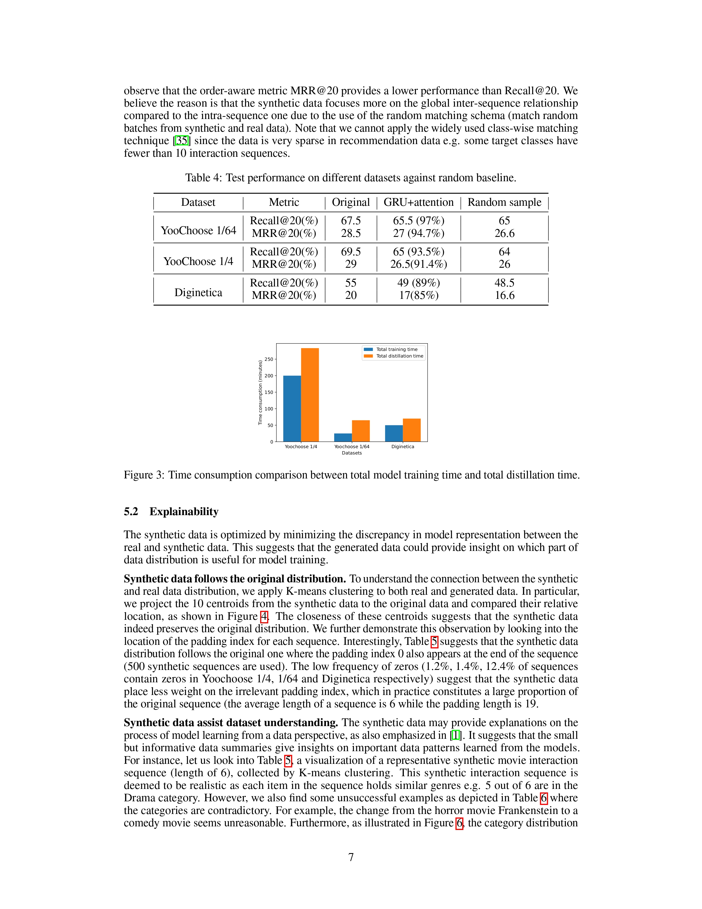 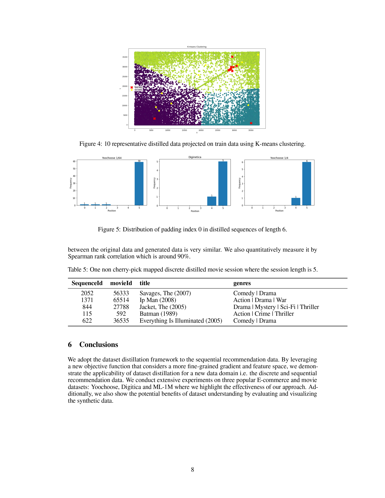 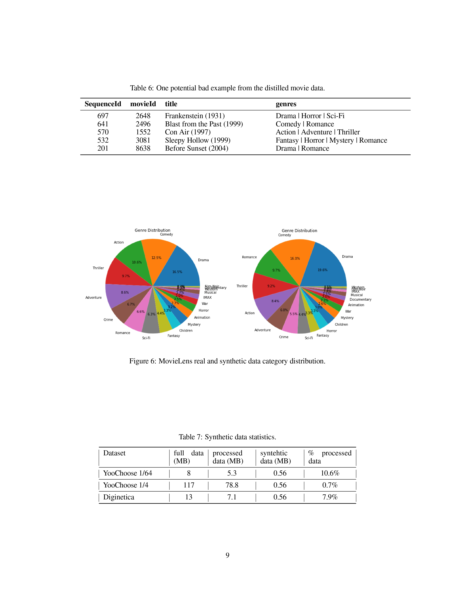 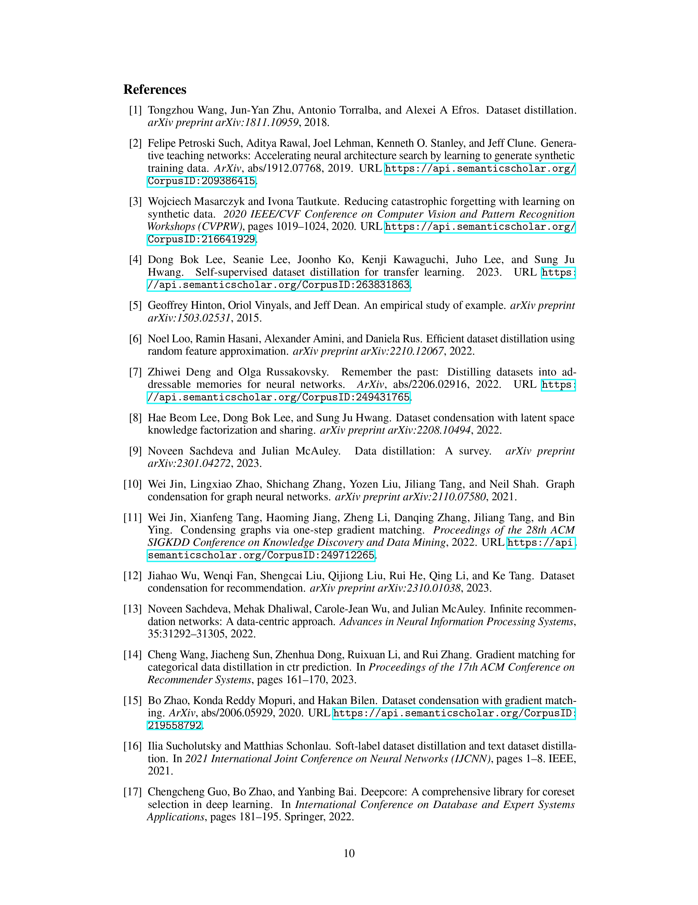 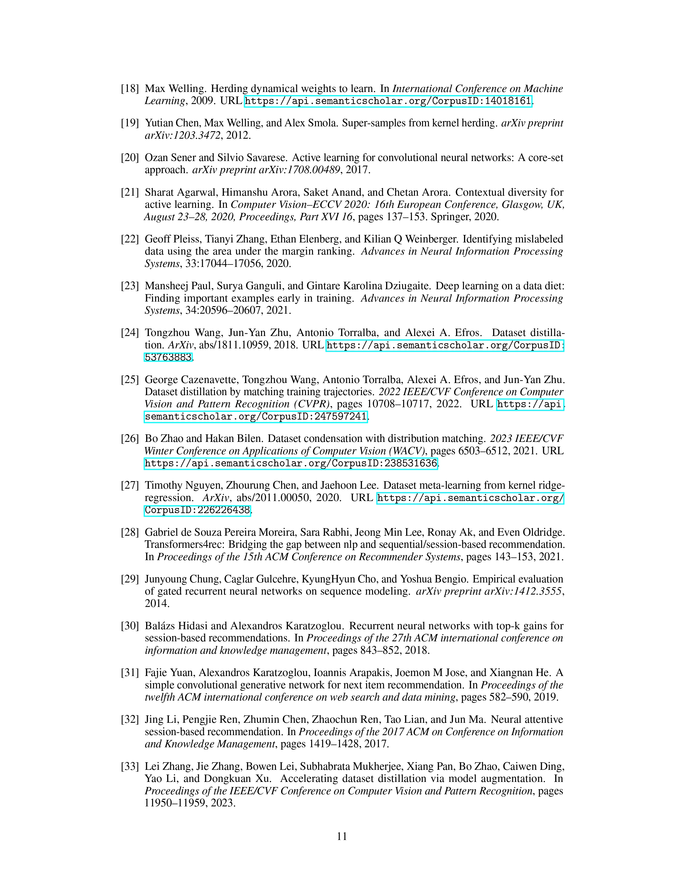 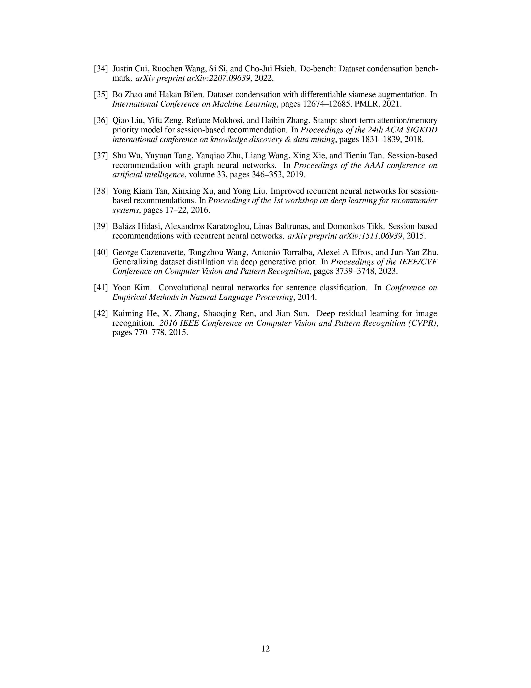
Code#
#!/usr/bin/env python37
# -*- coding: utf-8 -*-
"""
Created on 19 Sep, 2019
@author: wangshuo
# train
!python dc_pretrain.py --dataset_path="../autodl-fs/digi/" --data_path="../autodl-fs/" \
--n_sess 500 --sess_len 6 --embed_dim 50 \
--batch_size 1000 --batch_syn 500 \
--Iteration 500 --eval_freq 1 --epoch_retrain 61 \
--model narm \
--outer_loop 20 --inner_loop 1 \
--match grad --saved_epoch 5 --saved_name digi > digi.txt
# test
!python dc_pretrain.py --dataset_path="../autodl-fs/yoo1_64/" --data_path="../autodl-fs/" \
--n_sess 500 --sess_len 6 --embed_dim 50 \
--batch_size 50 --batch_syn 50 \
--Iteration 500 --eval_freq 1 --epoch_retrain 61 \
--model narm \
--outer_loop 20 --inner_loop 1 \
--match grad --test --distill_data="../autodl-fs/distill_data_100.pth.tar"
# warmup
!python dc_pretrain.py --dataset_path="../autodl-fs/yoo1_64/" --data_path="../autodl-fs/" \
--n_sess 500 --sess_len 6 --embed_dim 50 \
--batch_size 1000 --batch_syn 500 \
--Iteration 500 --eval_freq 1 --epoch_retrain 31 \
--model narm \
--outer_loop 50 --inner_loop 1 \
--match grad --warmup --eval_freq 5
# data aug + test
!python dc_pretrain.py --dataset_path="../autodl-fs/digi/" --data_path="../autodl-fs/" \
--n_sess 500 --sess_len 6 --embed_dim 50 \
--batch_size 1000 --batch_syn 500 \
--Iteration 500 --eval_freq 1 --epoch_retrain 200 \
--model narm \
--outer_loop 1 --inner_loop 1 \
--match grad --test --test_mode test --data_aug --distill_data digi_test_100.pth.tar
"""
import os
import time
import random
import argparse
import pickle
import numpy as np
from tqdm import tqdm
from os.path import join
import torch
from torch import nn
from torch.utils.data import DataLoader
import torch.nn.functional as F
import torch.optim as optim
from torch.optim.lr_scheduler import StepLR
from torch.autograd import Variable
from torch.backends import cudnn
import metric
from dataset import load_data, RecSysDataset, assign_category_class, load_movie_data
from utils import collate_fn, collate_fn_syn, get_time, generate_split_seq, get_loops, \
match_loss, get_network, SimilaritySearch, set_seed, set_emb_grad, softmax_all
import copy
from torch.utils.tensorboard import SummaryWriter
from functools import partial
from data_aug import DiffAugment
parser = argparse.ArgumentParser()
parser.add_argument('--dataset_path', default='datasets/digi/', help='dataset directory path: datasets/digi/yoo1_4/yoo1_64')
parser.add_argument('--batch_size', type=int, default=512, help='input batch size')
parser.add_argument('--hidden_size', type=int, default=100, help='hidden state size of gru module')
# parser.add_argument('--epoch', type=int, default=100, help='the number of epochs to train for')
parser.add_argument('--test', action='store_true', help='test')
parser.add_argument('--topk', type=int, default=20, help='number of top score items selected for calculating recall and mrr metrics')
parser.add_argument('--valid_portion', type=float, default=0.1, help='split the portion of training set as validation set')
parser.add_argument('--n_sess', default=500, type=int, help='#sessions in the distilled data')
parser.add_argument('--sess_len', default=6, type=int, help='length of each sessions in the distilled data')
parser.add_argument("--embed_dim", type=int, default=52, help="the dimension of item embedding") #SLDD use 50, same for embed layer and distill data so that can map
parser.add_argument('--init', default='random', type=str, choices=['real', 'random'], help='which sampling / distillation methods ')
parser.add_argument('--Iteration', type=int, default=200, help='how many distillation steps to perform')
parser.add_argument('--batch_syn', type=int, default=None, help='should only use this if you run out of VRAM')
parser.add_argument('--lr', type=float, default=0.001, help='learning rate') # TODO: no lr decay used in original paper
parser.add_argument('--lr_data', type=float, default=0.1, help='learning rate for updating synthetic images')
parser.add_argument('--lr_retrain', type=float, default=0.001, help='learning rate for updating synthetic images')
parser.add_argument('--data_aug', action='store_true', help='this turns off diff aug during distillation')
parser.add_argument('--epoch_retrain', type=int, default=60, help='#epochs to retrain model for eval')
parser.add_argument('--eval_freq', type=int, default=1, help='freq to eval model')
parser.add_argument('--dis_metric', default='layerwise', type=str, choices=['mse', 'cos', 'layerwise', 'ours']) # TODO: layerwise, structure-aware loss
parser.add_argument('--use_pretrain_weight', action='store_true', help='use pretrain model to init weight')
parser.add_argument('--ablation', action='store_true', help='')
parser.add_argument('--data_path', default='', type=str)
parser.add_argument('--outer_loop', default=50, type=int, help='')
parser.add_argument('--inner_loop', default=1, type=int, help='')
parser.add_argument('--model', default='narm', type=str, choices=['narm', 'bert', 'nextit', 'stamp', 'narm_conv', 'narm_lstm', 'narm_rnn'])
parser.add_argument('--max_len', default=19, type=int, help='max len')
parser.add_argument('--eval_many', action='store_true', help='')
parser.add_argument('--is_exp', action='store_true', help='experiment mode not save')
parser.add_argument('--saved_name', default='', type=str)
parser.add_argument('--emb_grad', action='store_true', help='true')
# alabtion study, experiment purpose
parser.add_argument('--match', default='grad', type=str, choices=['grad', 'feat', 'output', 'param'])
parser.add_argument('--n_class', default=0, type=int, help='max len')
parser.add_argument('--use_fasttext_emb', action='store_true', help='use fasttext over model learnt embed')
parser.add_argument('--batch_val', type=int, default=1024, help='validation batch size, 15000 - yoo1/4')
parser.add_argument('--saved_epoch', type=int, default=5, help='validation batch size, 15000 - yoo1/4')
parser.add_argument('--use_discrete_data', action='store_true', help='experiment mode not save')
parser.add_argument('--no_emb', action='store_true', help='')
parser.add_argument('--distill_data', default='distill_data_latest_10.pth.tar', type=str)
parser.add_argument('--test_model', default='', type=str)
parser.add_argument('--eval_emb', default='', type=str)
parser.add_argument('--warmup', action='store_true', help='')
parser.add_argument('--random_emb', action='store_true', help='')
parser.add_argument('--eval_pretrain_weight', action='store_true', help='')
parser.add_argument('--test_mode', default='', type=str, choices=['val', 'test'])
parser.add_argument('--combo', action='store_true', help='')
args = parser.parse_args()
device = torch.device('cuda' if torch.cuda.is_available() else 'cpu')
# TODO batch size
if args.batch_syn is None:
args.batch_syn = args.n_sess * args.sess_len # use all syn
args.outer_loop, args.inner_loop = args.outer_loop, args.inner_loop # get_loops(args.n_sess) # TODO: hyperparam
args.device = device
print(args)
here = os.path.dirname(os.path.abspath(__file__))
MODELS = ['narm', 'narm_rnn', 'narm_lstm', 'stamp', 'nextit', ] # 'bert', 'gru'
if args.ablation:
set_seed(0)
def main():
print('Loading data...')
if args.dataset_path.split('/')[-2] in ['digi', 'yoo1_64', 'yoo1_4']:
train, valid, test = load_data(args.dataset_path, valid_portion=args.valid_portion, maxlen=args.max_len)
elif args.dataset_path.split('/')[-2] in ['ml_20m']:
train, valid = load_movie_data(args.dataset_path,)
distill_data = torch.randn(args.n_sess, args.sess_len, dtype=torch.float, # TODO: init from real data pass in embed layer
device=device, requires_grad=True)
if args.n_class != 0:
train_cat_idx = assign_category_class(train[0]) # TODO
# uncomment below to get used data size
# get_data_size(train)
syn = generate_split_seq(distill_data)
syn_loader = DataLoader(RecSysDataset(syn), batch_size = args.batch_syn, shuffle=False, collate_fn=collate_fn) # collate_fn_syn
valid_loader = DataLoader(RecSysDataset(valid), batch_size = args.batch_val, shuffle=False, collate_fn=collate_fn)
train_loader = DataLoader(RecSysDataset(train), batch_size = args.batch_size, shuffle=False, collate_fn=collate_fn)
test_loader = DataLoader(RecSysDataset(test), batch_size = args.batch_size, shuffle = False, collate_fn = collate_fn)
args.test_loader = test_loader
pretrain_emb = args.model
if args.use_fasttext_emb:
pretrain_emb = 'fasttext'
args.dataset_name = args.dataset_path.split('/')[-2]
if args.dataset_name == 'digi':
args.n_items = 43098
elif args.dataset_name == 'yoo1_64':
args.n_items = 37484
elif args.dataset_name == 'yoo1_4':
args.n_items = 37484
elif args.dataset_name == 'ml_20m':
args.n_items = 11617 + 1
else:
raise Exception('Unknown Dataset!')
args.embed_matrix = None
'''training'''
criterion = nn.CrossEntropyLoss().to(device)
optimizer_data = torch.optim.SGD([distill_data], lr=args.lr_data, momentum=0.5) # for synthetic data, , lr=args.lr_data ; not: Adam, AdamW , Adagrad, Adadelta
if args.match == 'feat':
optimizer_data = torch.optim.RMSprop([distill_data])
print('%s training begins'%get_time())
len_train_loader = len(train_loader)
len_syn_loader = len(syn_loader)
train_loader_list = list(train_loader)
iter_start_time = time.time()
'''print training info'''
print(f'[CONFIG]: \
outer_loop: {args.outer_loop}, inner_loop: {args.inner_loop} \n \
(n_sess, sess_len, embed_dim): ({args.n_sess}, {args.sess_len}, {args.embed_dim}) \n \
use data aug: {args.data_aug} \n \
dis_metric: {args.dis_metric} \n \
use_pretrain_weight: {args.use_pretrain_weight} \n \
Eval models: {MODELS}\n')
tmp = get_network(args, args.model, use_pretrain_weight=False, embed_matrix=None)
for idx, (name, param) in enumerate(tmp.named_parameters()):
print(idx, name, param.shape)
if args.test_mode != '':
args.eval_many = True
data = torch.load(args.distill_data)
print(f"\n[TEST]: load {args.distill_data}, epoch={data['epoch']}")
data_loader = test_loader if args.test_mode == 'test' else valid_loader
evaluate_iter(data['data'], criterion, data_loader, early_exit=False, eval_iter=1)
print('[TEST]: Finished')
return
for it in range(0, args.Iteration+1):
print(f'\n[INFO]: Iteartion {it}/{args.Iteration+1} \n')
'''get a different model initialisation for every epoch'''
model = get_network(args, args.model, args.use_pretrain_weight, embed_matrix=args.embed_matrix)
model_real = model
if args.warmup:
model = get_network(args, args.model, use_pretrain_weight=True, embed_matrix=None, which_ep=0) # match ep0 to ep30 to make converge faster
args.train_loader = train_loader
model_real = get_network(args, args.model, use_pretrain_weight=True, embed_matrix=None, which_ep=29) # TODO
model_real.train()
if args.combo:
model = get_network(args, args.model, use_pretrain_weight=False, embed_matrix=None)
# model_real = model
model_real = get_network(args, args.model, use_pretrain_weight=True, embed_matrix=None, which_ep=29)
model_real.train()
model.train()
optimizer_model = optim.Adam(model.parameters(), args.lr)
loss_avg = []
'''outer loop'''
for ol in range(args.outer_loop):
time_outer = time.time()
distill_data = softmax_all(distill_data)
# create a int matrix for input whose grad will be updated to the distilled data
syn_tmp = torch.round(args.n_items * copy.deepcopy(distill_data.detach())).long()
syn = generate_split_seq(syn_tmp) # TODO: remove this reset, note it gives error: view change during backprop atm
syn_loader_raw = DataLoader(RecSysDataset(syn), batch_size = args.batch_syn, shuffle=False, collate_fn=collate_fn) # collate_fn_syn
start = random.randint(0, len_train_loader-len_syn_loader-1)
real_loader_raw = train_loader_list[start:start+len_syn_loader] # same # batch but could be different batch size
real_loader, syn_loader = real_loader_raw, syn_loader_raw
if args.data_aug:
# set random seed so that both augment same
seed = int(time.time() * 1000) % 100000 # TODO: unfix seed to avoid get network getting the same weight init
syn_loader = DiffAugment(syn_loader_raw, is_syn=True, seed=seed)
real_loader = DiffAugment(real_loader_raw, is_syn=False, seed=seed)
'''grad for real / syn data'''
set_emb_grad(args.model, model, require_grad=True)
time_grad = time.time()
loss = torch.tensor(0.0).to(device)
property_real_steps = get_match_property(model_real, real_loader, criterion, is_syn=False)
property_syn_steps = get_match_property(model, syn_loader, criterion, is_syn=False)
'''gather loss from all training steps'''
for step in range(len(property_syn_steps)):
loss += match_loss(property_syn_steps[step], property_real_steps[step], args)
# print(f'[INFO]: get grad time {round(time.time() - time_grad, 2)}' )
'''loss backward'''
optimizer_data.zero_grad()
loss.backward()
# assign grad from int matrix to float mat
distill_data.grad = syn_tmp.grad
before_step = copy.deepcopy(distill_data.detach())
optimizer_data.step()
after_step = copy.deepcopy(distill_data.detach())
loss_avg.append(loss.item() / args.batch_size)
''' update model using synthetic data'''
syn_inp = copy.deepcopy(distill_data.detach())
collate_fn_inner = collate_fn_syn
is_syn_inner = True
if args.use_discrete_data:
syn_inp = args.sim_search.to_discrete_all(syn_inp.cpu().detach().numpy())
collate_fn_inner = collate_fn
is_syn_inner = False
syn_loader_detach = DataLoader(RecSysDataset(generate_split_seq(syn_inp)), batch_size = args.batch_syn, shuffle=False, collate_fn=collate_fn_inner)
loss_syn, time_syn = 0, 0
for epoch_inner in range(args.inner_loop):
# if args.warmup:
# l2, t2 = trainForEpoch(args.train_loader, model, optimizer_model, criterion, is_syn=False, is_aug=args.data_aug) # TODO: use full dataest args.train_loader
if args.combo:
syn_discrete = args.sim_search.to_discrete_all(syn_inp.cpu().detach().numpy())
syn_discrete_loader = DataLoader(RecSysDataset(generate_split_seq(syn_discrete)), batch_size = args.batch_syn, shuffle=False, collate_fn=collate_fn)
l2, t2 = trainForEpoch(syn_discrete_loader, model, optimizer_model, criterion, is_syn=False, is_aug=args.data_aug)
l, t = trainForEpoch(syn_loader_detach, model, optimizer_model, criterion, is_syn=is_syn_inner, is_aug=args.data_aug)
loss_syn += l
time_syn += t
if args.inner_loop != 0:
print(f'[INFO]: {args.inner_loop} Inner loops: avg loss: {loss_syn/args.inner_loop}, time_syn: {round(time_syn, 2)}s')
data_diff_mean = torch.mean(torch.abs(before_step - after_step))
print(f'[INFO]: Outer loop {ol}/{args.outer_loop} loss (avg step): ', round(loss.item() / args.batch_size / len(property_syn_steps), 6), \
f", Outer Time: {round(time.time() - time_outer, 2)}s",\
f", data diff: {torch.where(before_step.eq(after_step)==False)[0].shape[0]}, data_diff_mean: {round(data_diff_mean.item(), 6)}")
'''eval'''
if it % args.eval_freq == 0:
evaluate_iter(distill_data, criterion, valid_loader, ) # early_exit=False if args.data_aug else True
'''save'''
# store best loss and save a model checkpoint
ckpt_dict = {
'epoch': it + 1,
'data': distill_data,
}
if it % args.saved_epoch == 0 and not args.is_exp: # and it >= 100
print(f'[INFO]: Save data at iteration {it}')
name = args.saved_name if args.saved_name else 'distill_data'
torch.save(ckpt_dict, f'{name}_{it}.pth.tar')
# torch.save(ckpt_dict, f'distill_data_latest.pth.tar')
print(f'[INFO]: Iteration {it} time: {round(time.time() - iter_start_time, 2)}s')
iter_start_time = time.time()
print("[INFO]: Finished")
def get_match_property(model, dataloader, criterion, is_syn: bool):
if args.match == 'grad':
return get_grad(model, dataloader, criterion, is_syn)
elif args.match in ['feat', 'output']:
return get_feat(model, dataloader, criterion, is_syn, args.match)
else:
exit(f"No such proerpty exist: {args.match}")
def get_grad(model, dataloader, criterion, is_syn: bool):
grad_list = []
for i, (seq, target, lens) in enumerate(dataloader):
seq = seq.to(device)
target = target.to(device)
s = time.time()
with torch.backends.cudnn.flags(enabled=False):
outputs = model(seq, lens, is_syn=is_syn) # 1s: nextit
# print('get a output: ', time.time() - s)
model_params = [i for i in list(model.parameters()) if i.requires_grad]
if is_syn: # 0.05 * 5 = 0.25s
target_hard = args.sim_search.get_closest_vec(target.cpu().detach().numpy()) # converet soft label to hard to avoid soft label size mismatch output size
loss = criterion(outputs, target_hard)
else:
loss = criterion(outputs, target)
gw = torch.autograd.grad(loss, model_params, create_graph=is_syn, allow_unused=True) # 0.002s
if not is_syn:
gw = list((_.detach().clone() for _ in gw))
grad_list.append(gw)
return grad_list
def get_feat(model, dataloader, criterion, is_syn: bool, type='feat'):
feature_list = []
for i, (seq, target, lens) in enumerate(dataloader):
seq = seq.to(device)
target = target.to(device)
s = time.time()
with torch.backends.cudnn.flags(enabled=False):
if type == 'feat':
features = model(seq, lens, is_syn=is_syn, is_feat=True) # 1s: nextit
elif type == 'output':
features = model(seq, lens, is_syn=is_syn)
feature_list.append(features)
# print('get a output: ', time.time() - s)
return feature_list
def trainForEpoch(train_loader_raw, model, optimizer, criterion, is_syn, is_aug=False):
model.train()
sum_epoch_loss = 0
start = time.time()
train_loader = train_loader_raw
if is_aug:
train_loader = DiffAugment(train_loader_raw, is_syn=is_syn, seed=int(time.time() * 1000) % 100000) # diff per epoch, increase epoch len
for i, (seq, target, lens) in enumerate(train_loader): # lens=19 since 10 steps truncated BPTT, seq: (19, 512)
seq = seq.to(device)
target = target.to(device) # torch.Size([512])
optimizer.zero_grad()
outputs = model(seq, lens, is_syn) # torch.Size([512, 37484])
target_train = target
if is_syn:
target_train = args.sim_search.get_closest_vec(target.cpu().detach().numpy())
loss = criterion(outputs, target_train)
loss.backward()
optimizer.step()
loss_val = loss.item()
sum_epoch_loss += loss_val
avg_batch_loss = round(sum_epoch_loss / (i + 1), 4)
return avg_batch_loss, time.time() - start
def validate(valid_loader, model):
model.eval()
recalls = []
mrrs = []
with torch.no_grad():
for seq, target, lens in tqdm(valid_loader):
seq = seq.to(device)
target = target.to(device)
outputs = model(seq, lens, is_syn=False) # TODO
logits = F.softmax(outputs, dim = 1)
recall, mrr = metric.evaluate(logits, target, k = args.topk)
recalls.append(recall)
mrrs.append(mrr)
mean_recall = np.mean(recalls)
mean_mrr = np.mean(mrrs)
return mean_recall, mean_mrr
def evaluate_iter(distill_data, criterion, valid_loader, early_exit=True, eval_iter=5):
model_list = [args.model] if args.model != 'ensemble' else []
if args.eval_many:
model_list += [mo for mo in MODELS if mo != args.model]
if args.test_model != '':
model_list = [args.test_model]
if args.random_emb or args.eval_pretrain_weight:
model_list = [args.test_model] * 50
for idx, m in enumerate(model_list):
# p = f'{args.data_path}embed_matrix_{args.dataset_name}_{m}_d{args.embed_dim}.npy'
# if m == 'gru': # TODO: current withpout negative sampling, GRU is very bad, remove
# p = f'{args.data_path}embed_matrix_{args.dataset_name}_narm_d{args.embed_dim}.npy' # np.load(p, allow_pickle=True)
embed_matrix_eval = args.embed_matrix if args.eval_emb == '' else np.load(f'{args.data_path}embed_matrix_{args.dataset_name}_{args.eval_emb}_d{args.embed_dim}.npy', allow_pickle=True)
collate_fn_eval = collate_fn # collate_fn_syn
is_syn_eval = True
syn_inp = copy.deepcopy(distill_data.detach())
which = -1
pretrain_w = False
if args.use_discrete_data:
syn_inp = args.sim_search.to_discrete_all(syn_inp.cpu().detach().numpy())
embed_matrix_eval = None
collate_fn_eval = collate_fn
is_syn_eval = False
if args.no_emb:
embed_matrix_eval = None
if args.warmup:
embed_matrix_eval = None
eval_iter = 1
if args.random_emb or args.eval_pretrain_weight:
which = idx
if args.eval_pretrain_weight:
pretrain_w = True
syn_loader_detach = DataLoader(RecSysDataset(generate_split_seq(syn_inp)), batch_size = args.batch_syn, shuffle=False, collate_fn=collate_fn_eval)
model_eval = get_network(args, m, use_pretrain_weight=pretrain_w, embed_matrix=embed_matrix_eval, which=which, random_emb=args.random_emb)
if args.warmup:
print('[REAL]: load 1ep fixed pretrain weight')
model_eval = get_network(args, m, use_pretrain_weight=pretrain_w, embed_matrix=None, warmup=True)
# l2, _ = trainForEpoch(args.train_loader, model_eval, optimizer_model_eval, criterion, is_syn=False, is_aug=args.data_aug)
# print(f'[TRAIN-REAL]: loss: {l2}')
if args.combo:
print('[EVAL]: No pretrained embedding')
model_eval = get_network(args, args.model, use_pretrain_weight=False, embed_matrix=None)
optimizer_model_eval = optim.Adam(model_eval.parameters(), args.lr_retrain)
set_emb_grad(m, model_eval, require_grad=True if args.emb_grad else False) # TODO
print(f"\n[EVAL]: {m.upper()} with emb: {embed_matrix_eval is not None} \n")
if args.eval_pretrain_weight:
recall, mrr = validate(valid_loader, model_eval)
print('validation: Recall@{}: {:.4f}, MRR@{}: {:.4f} \n'.format(args.topk, recall, args.topk, mrr))
continue
re = []
best_model = None
best_recall, best_epoch = 0, 0
for i in range(args.epoch_retrain):
if args.combo:
syn_discrete = args.sim_search.to_discrete_all(syn_inp.cpu().detach().numpy())
syn_discrete_loader = DataLoader(RecSysDataset(generate_split_seq(syn_discrete)), batch_size = args.batch_syn, shuffle=False, collate_fn=collate_fn)
l2, t2 = trainForEpoch(syn_discrete_loader, model_eval, optimizer_model_eval, criterion, is_syn=False, is_aug=args.data_aug)
l, _ = trainForEpoch(syn_loader_detach, model_eval, optimizer_model_eval, criterion, is_syn=is_syn_eval, is_aug=args.data_aug)
if i % eval_iter == 0:
recall, mrr = validate(valid_loader, model_eval)
print('Epoch {} validation: Recall@{}: {:.4f}, MRR@{}: {:.4f} Train loss: {} \n'.format(i, args.topk, recall, args.topk, mrr, l))
re.append(recall)
if recall > best_recall:
best_recall = recall
best_model = copy.deepcopy(model_eval)
best_epoch = i
if early_exit and len(re) >= 3 and re[-3] > re[-2] and re[-2] > re[-1]: # not improve for 2 rounds, exit
break
print('[TEST]: Use best eval model')
recall, mrr = validate(args.test_loader, best_model)
print('Epoch {} Test: Recall@{}: {:.4f}, MRR@{}: {:.4f}\n'.format(best_epoch, args.topk, recall, args.topk, mrr))
if __name__ == '__main__':
main()